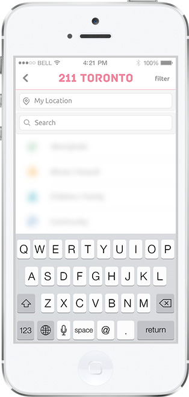
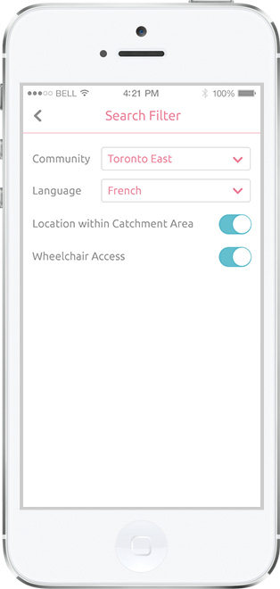
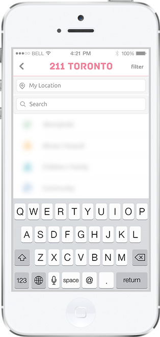
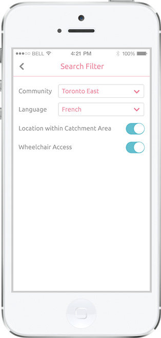

This is an iOS app concept for 211 Toronto, a comprehensive local social service locater. It helps people find services in a variety of areas, ranging from food bank to legal assistance. This app's target users are service workers who would refer services to their clients on regular basis. I conducted in-person/Facebook interviews with a few workers before jumping into Axure and Photoshop.
Service workers often work in the community (eg. clients' home) with no access to their computers. Therefore, this app will come in handy. I chose a clean, graphic-minimal style to optimize access speed via mobile data.
 



From the start page, users may either start searching right away, or browse by service categories.
In my interviews, workers are most concerned about matching searching criteria with their clients' conditions, especially for clients with language barriers or disabilities. A filter function was added to address such needs.
The search results are shown in horizontal "slides" (like in the 2nd image above), displayed under different service areas. In my draft design, this category switch was done by changing settings in the filter. However, since service categories are largely general, vague and overlapping, users may need to go into the filter a few times before they find the most appropriate results. The current design, inspired by Etsy, is a much easier way to quickly browse categorized results.
Users can also switch between the list view and the map view.
Details of each service agency can be accessed from either the list or the map view. Viewers can pull to enlarge the map area on the detail page.
Users can also bookmark/tag services to build their own service catalogue.
Above are several icons I made for demonstrated service areas in this app.